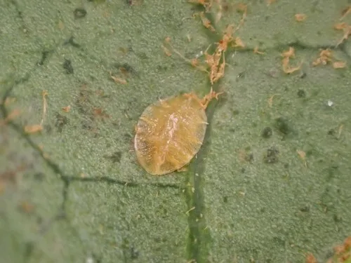
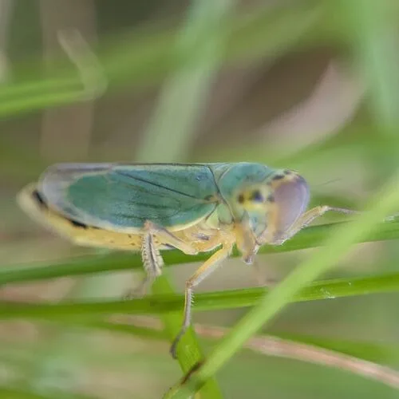

害虫问题

短足、身体分节的幼虫沿着新鲜咬孔寻找幼虫，检查叶片折叠处和枝条背面。

梨形小虫聚集在新梢上查看嫩梢和花蕾周围是否有成群的小虫、蜕皮及发黏的叶片。

枝叶上有可剥离的小壳用放大镜检查叶脉和枝条上的突起，区分虫壳与植物本身的组织。

叶面有椭圆形甲虫和咬孔拍下甲虫翅鞘、体形和它正在取食的位置。

叶腋有白色棉絮状小虫仔细查看叶柄连接处，寻找蜡絮覆盖的虫体及附近的蜜露。

叶背有细小螨和细丝观察叶背是否有细丝、活动的小点和叶面失绿斑。

长触角甲虫与枝干孔洞查看枝干是否同时有圆孔、碎屑和衰弱枝，单只成虫停留不能确认木内有幼虫。

卷壳软体动物与黏液痕迹在潮湿傍晚检查盆沿、叶下方及附近的遮蔽物。

带长吻的甲虫和叶缘缺刻观察叶缘是否有半圆形缺刻，夜间看看植株上是否出现长吻甲虫。

花和嫩叶上的细长小虫将花轻轻敲在白纸上，用放大镜查看细长小虫，并留意花瓣的刮擦状斑纹。

透明网翅小虫与浅色斑点观察叶背是否有网纹翅膀的小虫和黑色斑点，与叶面浅色小点对照。

善跳的楔形小虫轻碰叶片，观察虫体是否侧跳；拍摄背部外形及叶上褪色区。